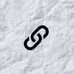
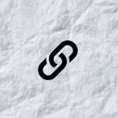
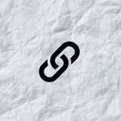

sponsors & partners

 

Vienna:
48.2446N,
16.3910E
4 crazy, young friends were bored in the rain under The Bridge, started racing with folding bikes. Having had incredible amount of fun, couldn't stop for the next few days. Decided to organize it as a nocturnal crit race next year.
